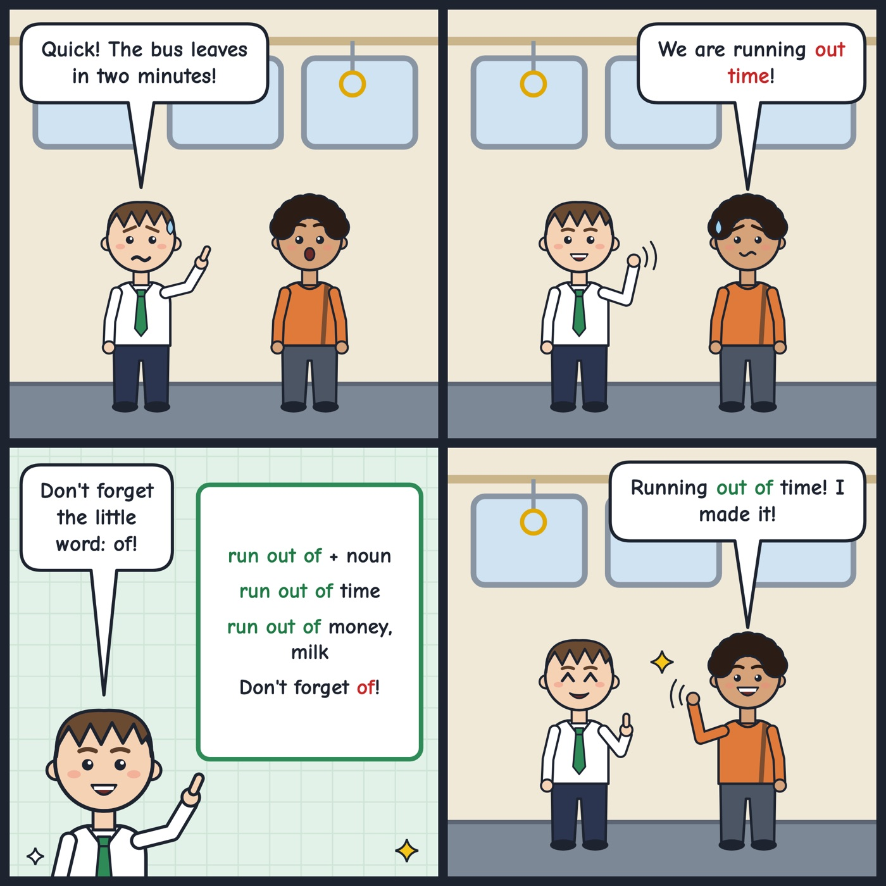

run out of time
To have no time left; to use all your time.
Hurry up! We're running out of time before the train leaves.
Say 'run out of + noun': run out of time, run out of money, run out of milk. Don't forget 'of'.

Your turn
What do you always run out of at home?
What do you always run out of at home?